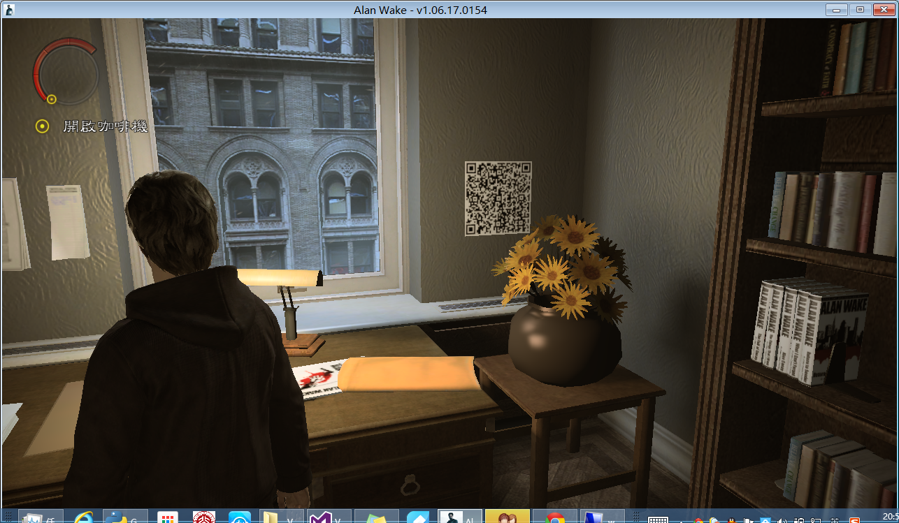
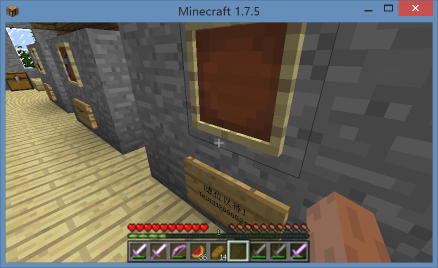
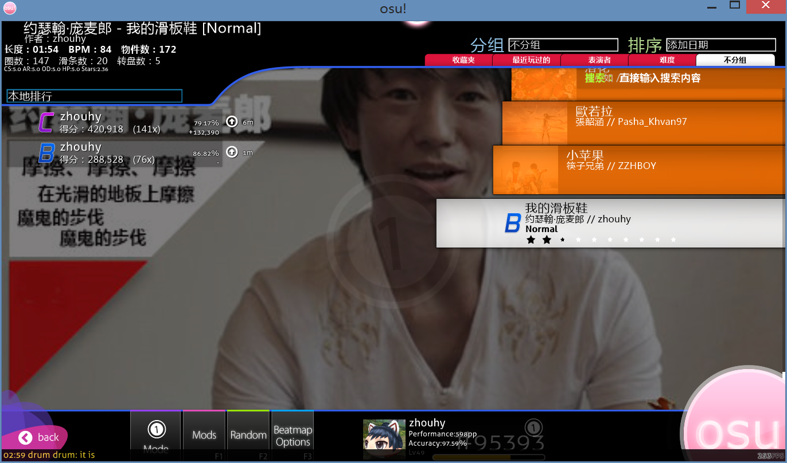
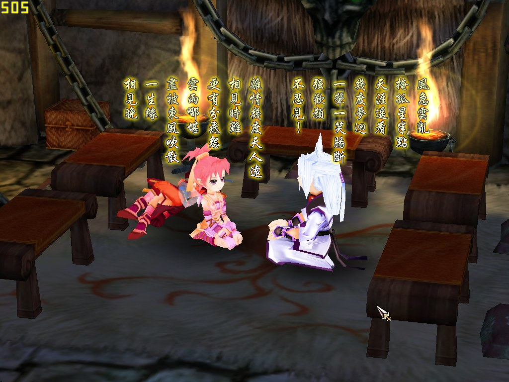
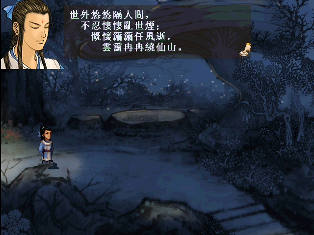

Homework List
I provided direct links to all the homeworks I have finished, they are listed below.
| # | Name | Description |
|---|---|---|
| 1 | Homework 1 (Week 1)* | A simple blog containing answer to some theoretical questions. |
| 2 | Homework 2 (Week 2)* | A simple webpage making use of some basic HTML elements. |
| 3 | Homework 3 (Week 3)* | A simple webpage with a basic layout and implements the questionare at the same time. |
| 4 | Homework 4 (Week 4)* | A guest & party manager written in PHP with multiple features. |
| 5 | Homework 5 (Week 5) | A JSP page showing how I modified the given Java programs. |
| 6 | Homework 6 (Week 6) | A JS-powered page for certain objectives. |
| 7 | Homework 7 (Week 7 & 8) | A pair of Java applet drawing graphics and jsp page implementing scoreboard. |
| 8 | Homework 8 (Week 9) | A XML file with schema and XSLT stylesheet containing a recipe. |
*: This homework is placed on the old WST server.
Personal Introduction
I'm 周昊宇 from PKU EECS 2012 majoring in CS.
My Hobbies
As a student in CS, my biggest hobby is undoubtedly playing computer games such as:





Besides, playing badminton and riding are also my favorite. Sometimes I even read classical literatures.
I fancy developing web applications, especially with javascript applied in both front-end and back-end(node.js).
I hope I can learn web technologies more thoroughly and systematically from this course.